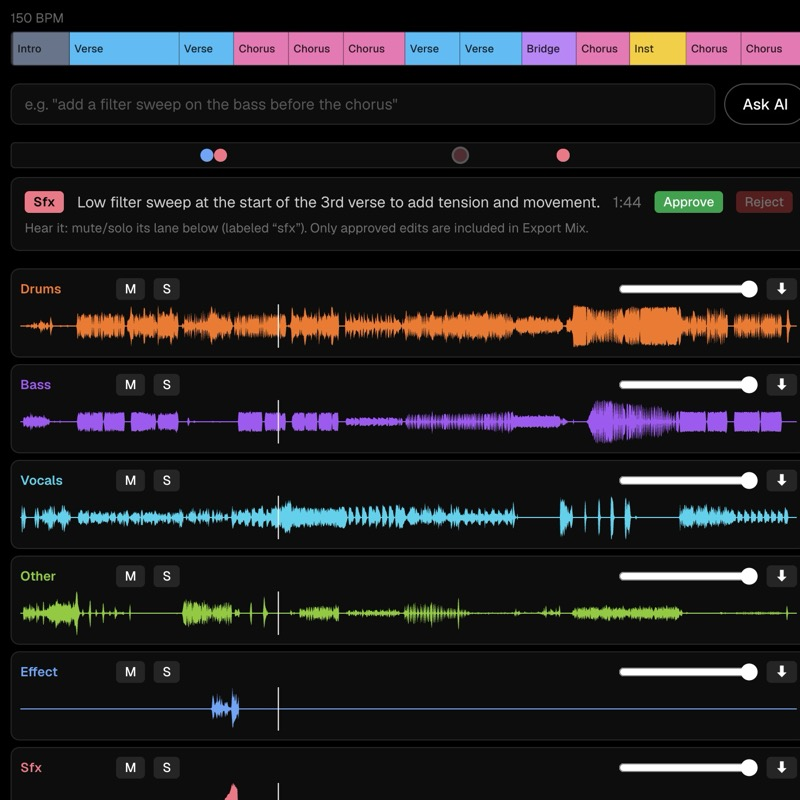

ai x artremix studioremix studio ↗
my favorite project yet. upload a song, split it into stems and remix it in plain english: a claude agent turns requests like "filter sweep before the chorus" into real audio edits; can manipulate and create with any segment of the imported audio!
next.js · typescript · claude · replicate · web audio